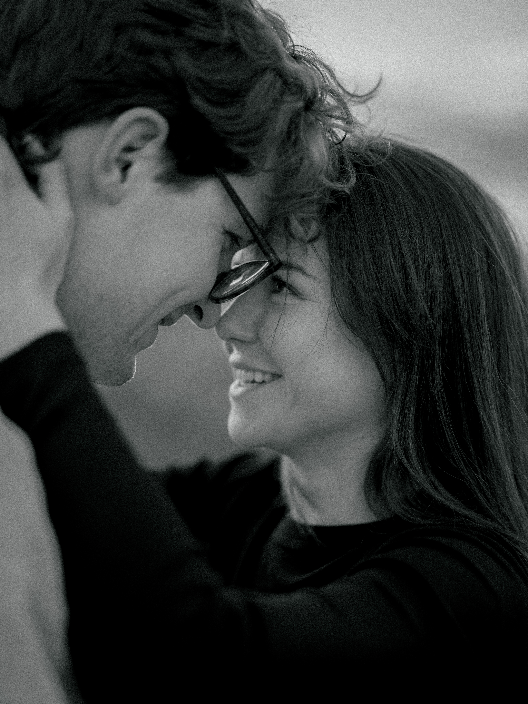

If you're seeing this, it means you're invited to our wedding on 18.09.2027 in Cyprus!
We've put together this little website to help you with everything you need to know - whether you're still deciding if you can make it, or you've already started planning your trip.

RSVP
To RSVP, please send us your name(s) and RSVP decision via:
TEXT OR WHATSAPP
Dóri +44(0)7360913083
Marios +44(0)7445163836
OUR JOINT E-MAIL
maridorihhw@gmail.com
IF YOU KNOW YOU CAN'T MAKE IT:
Please let us know, too! We completely understand that destination weddings can be harder to get to, and there are no hard feelings if you are not able to join us. We would just really appreciate you letting us know asap so we may plan accordingly.QUESTIONS & ANSWERS
PLANNING YOUR TRIP
WHERE SHOULD I FLY INTO? +
We recommend flying into Paphos (PFO), and, as a second option, Larnaca (LCA). We recommend hiring a car for your stay (you will need it!) and there are many rental places at the airports, so once you land, you can pick up your car too.
WHERE SHOULD I STAY? +
Stay at the venue - Anassa Hotel
If you'd like to stay with us at the wedding venuem our guests receive 10% off the standard rate. To get the discount, please contact the reservations team directly at res1.anassa@thanoshotels.com or +357 26 885 070 and mention our wedding.
Stay nearby
For more budget-friendly options, have a look at Y&P Latchi Hotel, Souli Beach Hotel or Aphrodite Beach Hotel. These are all close to the wedding and Latchi Harbour.
Villas & Apartments
If you're travelling as a family or group of friends, a villa with a private pool can be a great option, and often works out well when splitting the cost. For somewhere within roughly 5-10 minutes of the venue, search in Latchi, Neo Chorio or Polis Chrysochous. You could also look at The Olympians or Amorossa Villas, or use local booking specialists such as Luxury Latchi Villas or Chriseleni Holiday Villas. The traditional Airbnb is also an option.
Stay in Paphos (where Marios is from!)
If you'd rather be somewhere with more restaurants, bars and nightlife, including Almyra, Kissos Hotel, Paphos Gardens and Alexander The Great Hotel. Just bear in mind Paphos is around 45-50 minutes from the wedding venue, so you'll need to plan your transport accordingly.
I'M COMING FOR LONGER, WHAT SHOULD I SEE? +
If you're making a proper holiday of it, you're in for a treat! The northwest of Cyprus has some beautiful coastline, mountain villages, wineries and historical sites to explore.
The coast & Akamas
- Blue Lagoon - One of the most famous spots in Cyprus, with incredibly clear turquoise water. The easiest way to visit is by booking a glass-bottom boat trip from Latchi Harbour, or joining an organised 4x4 tour
- The Baths of Aphrodite - A beautiful natural grotto just beyond the Anassa, surrounded by greenery and linked to the mythology of Aphrodite and Adonis. It's also the starting point for some lovely coastal walks
- Latchi Harbour & Marina - Perfect for a relaxed afternoon or evening. Wander along the waterfront, stop for a fish meze or ice cream, or hire a small motorboat and explore the coastline from the water.
Villages and Wineries
If you fancy exploring some of Cyprus' wine country, these are a few wineries we really like:
- Ktima Gerolemo (Omodos) — One of our favourites! Set high in the mountains just outside Omodos, Gerolemo winery is surrounded by vineyards and beautiful countryside. It's a lovely one to combine with a wander around Omodos village and a day exploring the surrounding wine villages.
- Tsangarides Winery (Lemona) — A great option if you’re exploring around Paphos. This family-run winery is set amongst the hills and vineyards of the Paphos wine region and is known for its organic wines. A lovely place for a tasting and a relaxed afternoon.
- Vouni Panayia Winery (Pano Panagia) — A beautiful winery up in the mountains, around 800m above sea level, specialising in indigenous Cypriot grape varieties. The scenery alone makes the drive worthwhile, and it’s particularly easy to combine with a visit to Chrysorogiatissa Monastery.
Our tip: If you’re making a day of it, pick a winery or two and combine it with exploring the surrounding villages — there’s no need to try and tick them all off!
Monasteries & History
- Monastery of Saint Neophytos — A peaceful 12th-century monastery built into the hills, with an original cave hermitage and Byzantine frescoes.
- Chrysorogiatissa Monastery — A beautiful mountain monastery dating back to the 12th century, with gardens, incredible views and its own winery.
- Agios Georgios, Pegeia — A dramatic coastal spot combining an old church with the remains of ancient Christian basilicas. Particularly beautiful around sunset.
A little note: If you visit churches or monasteries, please remember that shoulders and knees should be covered when entering the buildings.
SHOULD I BOOK A CAR? +
Yes — we'd strongly recommend it.
Our venue is in a beautiful but fairly rural part of northwest Cyprus, and public transport is limited. Rideshare apps aren't widely available either, so having your own car will make exploring the island much easier.
You can hire a car from either Paphos or Larnaca airport. Companies including Sixt, Hertz, Avis and local provider Petsas operate from the airports.
A couple of things to bear in mind when booking:
- Automatic is highly recommended — especially if you're not used to driving a manual.
- We'd recommend an engine larger than 1.0L, ideally around 1.2–1.6L or above, as some of the roads into the mountains are surprisingly steep.
- Cyprus drives on the left, just like the UK.
- Book early if you need an automatic or larger car, as these tend to be the first to go.
One important exception: please don't take your standard rental car onto the dirt roads through the Akamas National Park. Rental insurance may not cover this, and some of the roads are unsuitable for ordinary cars. If you want to visit the Blue Lagoon, we'd recommend a boat trip from Latchi or an organised 4X4 tour instead.
DOES CYPRUS HAVE PUBLIC TRANSPORT? +
Yes, but... it's probably not going to be your best friend for this trip!
Buses operate around Cyprus, particularly in and around Paphos, but services become much more limited once you get out towards Latchi, Polis and the surrounding countryside. There are also no widely available Uber-style rideshare services, so we wouldn't recommend relying on public transport for getting to and from the wedding. Our recommendation: hire a car if you can. If you don't want to drive, travelling with friends or family and sharing taxis/transfers may be the easiest option.
WHERE SHOULD I EAT +
Here are a few of our favourite places to eat around Paphos and Latchi:
- Gennadios (Paphos) — A lovely choice for traditional Cypriot food with a more local feel. A great place to try some of the island’s classic dishes.
- Almyra Tavern (Paphos) — A relaxed spot right by the water and a great place to enjoy a traditional Cypriot meze. Perfect for a long, leisurely lunch or dinner overlooking the sea.
- Y&P Fish Tavern (Latchi) — One of our favourites for a proper fish meze. Expect course after course of fresh fish, seafood and traditional Cypriot sides, all served right on the waterfront. Come hungry!
- La Sardegna (Paphos) — If you fancy something different, this is a great choice for Italian food, with fresh pasta, seafood and Sardinian-inspired dishes.
For a lazy breakfast, brunch or coffee, we recommend:
- Omikron
- Alea
- Suite 48
- Muse
Don't forget to try the local food! While you're here, make sure you try a proper Cypriot meze, halloumi, souvlaki, sheftalia and plenty of fresh seafood. And when in doubt, order more meze — you'll never regret it!
WHAT ARE SOME KID-FRIENDLY ACTIVITIES? +
A few ideas for keeping little ones entertained...
- Boat trip to the Blue Lagoon — A glass-bottom boat trip from Latchi is a fun way to see the coastline and swim in the Blue Lagoon without having to tackle the Akamas roads.
- Beach days — There are plenty of beaches around Latchi, Polis, and Paphos for an easy, relaxed day by the sea.
- Latchi Harbour — Ice cream, boats and a wander around the marina — a pretty easy win with kids!
- Hire a little boat — For older children, hiring a small speedboat from Latchi can be a fun way to explore the coastline at your own pace.
ANYTHING ELSE I SHOULD KNOW? FROM WEATHER TO SOCKETS/PLUGS! +
- It's going to be warm! Bring plenty of sunscreen, sunglasses and something to cover up with during the hottest part of the day.
- Churches & monasteries — If you're planning to visit any churches or monasteries, please remember to cover your shoulders and knees when going inside.
- Remember: they drive on the left! Cyprus follows the same side of the road as the UK, but take extra care on mountain roads and when driving somewhere unfamiliar.
- Don't try to drive to the Blue Lagoon yourself. The dirt roads through the Akamas are not suitable for standard rental cars, and rental insurance may not cover you there. A boat trip or organised 4x4 tour is the safer option.
- Cyprus uses UK-style plugs.
WEDDING DETAILS
WHERE IS THE WEDDING? +
Our wedding will take place at Anassa Hotel.
40 Alekou Michailidi Road
Neo Chorio, 8852
Paphos, Cyprus
Link Here!
WHEN DOES THE WEDDING START? +
The ceremony will begin at 17:15.
We recommend arriving at 16:45 so you have time to settle in before the ceremony begins.
WHAT IS THE DRESS CODE? +
Black tie!
For women, this means long, formal dresses. For men, this mean a tuxedo or black suit with dress shoes.
Please note: NO WHITE. This includes white, cream, ivory, beige and other shades close to white. Please also avoid patterns or prints on a white or off-white background.
We’re looking forward to seeing everyone dressed up and celebrating with us!
WILL IT BE INDOORS OR OUTDOORS? +
We are currently planning for everything to be outdoors! If it begins to rain, we will move the cerebration inside.
WHAT'S THE HAPPS WITH GIFTS AND REGISTRY? +
Honestly, your presence is the greatest gift we could ask for — especially knowing that many of you are traveling from abroad to celebrate with us. That means the world to us.
We kindly ask that you don’t bring any physical gifts. If you would like to give us something, we would much prefer a contribution towards our honeymoon.
Most importantly, we can't wait to celebrate together!
IS THERE PARKING AT THE HOTEL? +
Yes! Parking is available at the hotel. When you arrive, a golf cart will help bring you to the hotel from the parking lot.
DO I HAVE A PLUS ONE? +
If your invitation mentions a plus one, then yes! Otherwise, we kindly ask that you come solo.
RSVP
To RSVP, please send us your name(s) and RSVP decision via:
Text or WhatsApp
Dóri +44(0)7360913083
Marios +44(0)7445163836
Our joint e-mail
maridorihhw@gmail.com
If you know you can't make it:
Please let us know too! We completely understand that destination weddings can be harder to get to, and there are no hard feelings if you are not able to join us. We would just really appreciate you letting us know asap so we may plan accordingly.